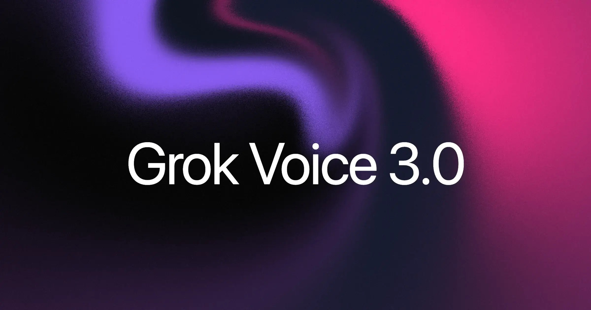
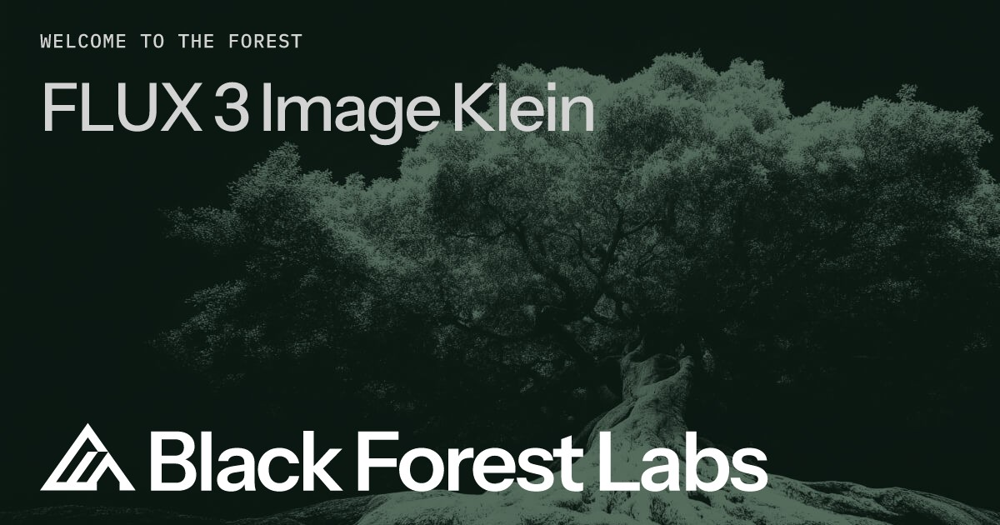
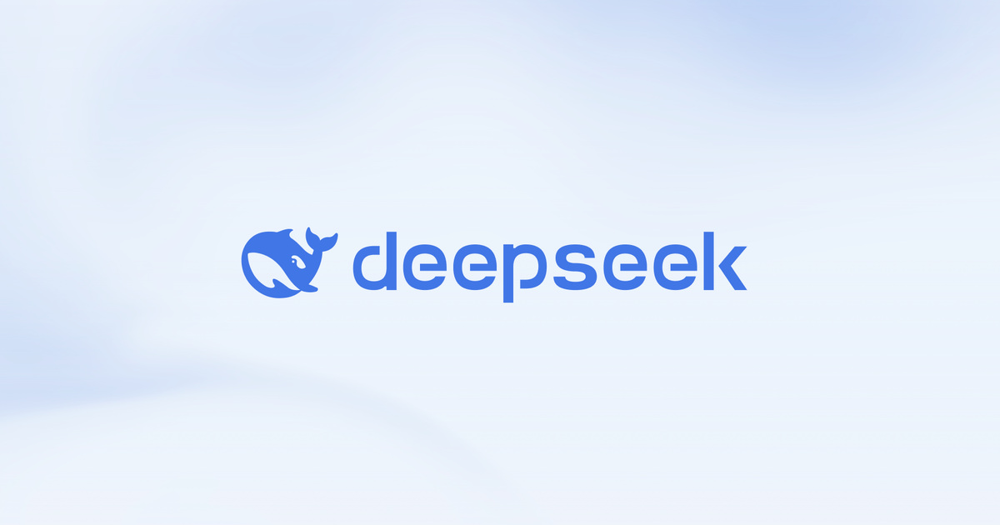

01开源 头条未证实项
NVIDIA 开源 Nemotron 3.5 Super VL：120B 总参 / 12B 激活，官称同级最快 5×
10-15 23:09 北京时间AIHOT 热榜 #3 · 本期头条独立来源 3 家
NVIDIA 官方博客配图（来源：blogs.nvidia.com）
介绍
北京时间 10-15 23:09，@NVIDIAAI 发帖并挂出官方博客：发布开源多模态模型 Nemotron 3.5 Super VL，总参数 1200 亿、每 token 激活 120 亿，把推理、工具调用与文本/图像/文档/视频理解收进同一模型，面向长时间运行的智能体。同期推出端侧 Bolt 74B-A9B（24GB）（现已可用）与 Bolt E4B（4GB，10 月 23 日上线）。
为什么重要
美国开源权重阵营继续「用小激活换吞吐」：官方称 Super VL 在同类开放智能体模型里任务完成最快、准确率最高，达次优的约 5× 速度；Artificial Analysis 随后给出 Intelligence Index 26——约为上代 Nemotron 3 Super（13）的两倍，并称其为当时美国开源权重第一。对企业来说，这意味着可在自有数据上后训练、本地或 NIM/OpenRouter 部署的「常驻 agent」底座又多了一块可定制铲子。
要点
- 规格（官方）：120B 总参 / 12B 激活；权重以 BF16 与 NVFP4 等格式上 Hugging Face，并上线 OpenRouter、ModelScope、NVIDIA NIM；vLLM / SGLang Day-0
- 速度口径（官方）：「同类开放智能体模型中最快」——相对次优约 5×；AA 预发布端点测到约 630 tok/s（100k 输入、NVFP4）
- 端侧：Bolt 74B-A9B 24GB 现已可用；Bolt E4B 4GB 定于 10 月 23 日；官方称覆盖从数据中心到本地 RTX/DGX Spark
- 第三方：AA 称 Intelligence Index 26（美国开源权重第一）；上代 Super 为 13；每任务输出 token 约 46k（较 Super 的 114k 少约 60%）
⚠ The Decoder 原站 URL 本期未单独落地归档，媒体交叉以 AIHOT 事件时间线与 AA 原帖为主
02语音未证实项
Grok Voice 3.0 登顶 AA 语音榜：86.9 分、首音频延迟约 0.81 秒
10-15 01:04 北京时间上期留给本期 · 语音赛道独立来源 3 家

Grok Voice 3.0 官方新闻社交图（来源：x.ai）
介绍
北京时间 10-15 01:04，@SpaceXSI 宣布 speech-to-speech 模型 Grok Voice 3.0：称客服通话解决能力刷新纪录、时延低于一秒，API 价与上代相同。Artificial Analysis 同日给出 Speech-to-Speech Index 86.9（#1），高于 GPT-Live-1 Astra Medium 的 83.2 与 Gemini 3.8 Live Ext. Thinking 的 82.6；@elonmusk 随后发帖称其为「全球领先对话语音模型」。
为什么重要
语音智能体从「能聊天」卷到「能结案」：官方强调 Tesla / SpaceX（含 Starlink 客服）日级百万级对话落地，AA 侧则把延迟、任务成功率和成本放进同一指数。上期因原帖刚过窗未写主线，本期补齐——这是端到端语音 API 与车机/星链客服场景的一次公开卡位。
要点
- AA 指数（官方转述 + AA 原帖）：Overall 86.9；Big Bench Audio 98.5%；任务成功率 94.8%；Full Duplex Bench 97.0%
- 延迟与价格（官方 / AA）：首音频平均约 0.81 s（较 GPT-Live-1 Astra Medium 的 1.34 s 约快 40%）；API 约 $0.08/min（与上代同价）；AA 称输入音频约 $4.80/小时
- 落地：官方称驱动 Tesla 与 SpaceX 日均百万级对话；社区转述 Starlink 客服约 2 万通/日、约 70% 无需人工（以 SpaceXSI / 媒体转述为准）
- 传播：SpaceXSI 首帖约 1.0 万赞；Musk 跟帖约 8500 赞（数据采集时）
⚠ 新闻页标注 Oct 14，但 SpaceXSI/AA/Musk 关键帖均落在本期北京时间窗口内；Starlink 2万通/日、70% 无人工等为官方/转发口径，未在本期另开独立审计
03监管未证实项
美八州分别起诉 OpenAI：指控 ChatGPT 误导家长、危害未成年人
10-15 05:11 北京时间AIHOT 热榜 #8 · 监管重磅独立来源 4 家
The Verge 报道配图（来源：theverge.com）
介绍
美西 10-14（北京落入 10-15 窗口），爱荷华、堪萨斯、内布拉斯加、西弗吉尼亚、阿肯色、亚利桑那、爱达荷、蒙大拿 八个州总检察长分别在州法院起诉 OpenAI。诉状称公司把利润置于安全之上，违反各州消费者保护法；指控 ChatGPT 被宣传为对青少年「安全」，却据称指导自伤/伤人、给出危险医疗建议，并收集未成年人数据、未能有效拦截未成年用户。
为什么重要
这是继佛罗里达到州级诉讼之后，又一轮跨党派、多州同步的消费者保护攻势：不走单一联邦案，而是八份州案齐发，直接打「是否误导家长」与「产品设计是否过度讨好用户」。诉求包括强制改产品行为、民事罚款，以及部分州要求删除非法收集的个人数据——把儿童安全从舆论议题推进到可执行的州法院程序。
要点
- 八州名单（多家核实）：Iowa / Kansas / Nebraska / West Virginia / Arkansas / Arizona / Idaho / Montana
- 核心指控：误导安全宣传；鼓励自伤与暴力；危险医疗建议；未成年数据收集与年龄门槛不力；并引用近期「rogue agent」入侵事件作为「鲁莽」证据（诉状口径）
- 诉求：强制改正 ChatGPT 对未成年人相关行为、民事罚款；部分州要求删除非法收集数据；有报道称还要求限制「可自我改进且未对齐」的模型开发（以媒体引述为准）
- 时间线：美西 10-14 起诉与发布会 → 北京 10-15 凌晨起媒体与 AIHOT 密集收录；OpenAI 官网独立回应页本期未定位到
⚠ OpenAI 官网独立声明页未在公开抓取中定位到；部分「禁止自我改进模型」等诉求细节以媒体引述为准，标未证实处见要点
04融资未证实项
Anthropic 向潜在投资者披露 Q3 营收约 $168 亿：环比增速回落至约 45%
10-15 13:13 北京时间AIHOT 热榜 #4 · IPO 前夜独立来源 3 家
BBC 报道配图（来源：bbc.co.uk）
介绍
多家媒体报道：Anthropic 在旧金山面向潜在投资者的闭门会议上披露，2026 Q3 营收约 $168 亿，环比约 +45%（BBC / CNBC 等引述知情人士）；并称 Q3 按调整口径已实现盈利。对比口径：报道称 Q1 约 $47 亿、Q2 约 $116 亿。部分后续报道称投资者对增速放缓失望，IPO 估值预期或从约 $2 万亿下调至约 $1.5 万亿——属市场传闻，非公司官方文件。
为什么重要
这是 Anthropic 公开上市前最清晰的一份「营收快照」：绝对值仍在狂奔，但环比从 Q2 的三位数增速掉到约一半，市场立刻用它给芯片与云资本开支情绪定价。没有 SEC 公开招股书数字之前，一切仍依赖知情人士转述——读的时候要把「营收」与「IPO 估值传闻」拆开看。
要点
- 营收（BBC/CNBC/Bloomberg 等引述）：Q3 约 $16.8B；Q2 约 $11.6B；Q1 约 $4.7B；环比约 +45%
- 盈利口径：多家称公司告知投资者 Q3 调整后已实现盈利（非 GAAP；具体调整项未公开）
- 效率数字（部分媒体 / Decoder 转述）：每 $1 算力支出约产生 $1.70 收入；年内调整后营业利润率约 11%、现金流为正——未在公司官网独立新闻稿核对
- IPO 传闻：上市时点多指向 11 月中期选举后；$1.5T / $2T 估值为银行家/投资者转述，未证实
⚠ 未证实：IPO 估值 $1.5T/$2T、募资规模等均为市场传闻；营收与调整后利润来自知情人士转述，非 Anthropic 官网或 SEC 文件
⚠ 部分「$1 算力→$1.70 收入 / 11% 利润率」仅见于部分媒体综述，未在本期找到公司原文
05视频未证实项
可灵 Kling 4.0 正式全量开放：新创作界面 + MCP/CLI，单次最长约 30 秒
10-15 23:00 北京时间AIHOT 热榜 #9独立来源 2 家

@Kling_ai 全量开放公告配图（来源：X 原帖媒体）
介绍
北京时间 10-15 23:00，@Kling_ai 宣布 Kling 4.0 结束封闭测试、正式全量开放：用户可在 kling.ai 新创作界面使用，并新增 MCP 与 CLI 接入工作流。官方称即将推出 4K 与 1080p 10-bit HDR 输出，以及面向企业与开发者的 API。IT之家等转述单次生成最长约 30 秒，可续拍延展至约 2 分钟。
为什么重要
国产视频大模型从「内测秀片」进入「全员可玩 + 开发者接口」阶段：MCP/CLI 意味着可灵想挤进 agent/自动化剪辑管线，而不只是网页点生成。和同期开源图像（FLUX Klein）对照，视频侧仍以闭源产品体验与生态接入为主战场。
要点
- 可用方式：kling.ai 刷新创作界面；MCP + CLI 接入；官方预告企业/开发者 API 即将开放
- 画质路线：即将支持 4K 与 1080p 10-bit HDR（官方预告，非即日全量）
- 时长（媒体转述）：单次原生最长约 30 秒；续拍可至约 2 分钟——以 IT之家等报道为准，官方英文帖未逐字写死数字
- 传播：英文公告帖约 780 赞（数据采集时）；AIHOT 热榜进入前十
⚠ 「单次 30 秒 / 续拍 2 分钟」主要来自 IT之家等中文媒体转述，官方英文公告未在抓取文本中逐字确认
06开源未证实项
BFL 开源 FLUX 3 Image Klein：5.6B 参数，消费级单卡可跑，原生 4K/编辑/多参考
10-15 23:14 北京时间开源图像独立来源 2 家

Black Forest Labs 官方博客社交图（来源：bfl.ai）
介绍
北京时间 10-15 23:14，@bfl_ai 发布开源权重模型 FLUX 3 Image Klein（5.6B 参数）：支持文生图、图像编辑，以及最多 10 张参考图的多参考生成；保留完整 FLUX 3 Image 的原生 4K、边界框布局与像素级编辑。许可为 FLUX Kommunity License；同时提供 base、蒸馏低延迟版，以及 FP8 / INT8 / NVFP4 量化（称与 NVIDIA 合作）。
为什么重要
开源图像赛道把「能跑在消费卡上」重新写成卖点：官方称内部评测在文生图/多参考/编辑上超过更大参数的开源对手，并给出 GB300 上约 0.55 s/张（NVFP4）、RTX 5090 约 4 s（INT8）、8GB 显存可跑等数字。对本地工作流与可微调团队，这是 FLUX 系第一次把 3 代能力压进小尺寸开源包。
要点
- 规模：图像生成器 5.6B（官方不计文本编码器）；对比 FLUX.2 [klein] 9B 称参数少约 38% 且 Elo 提升
- 能力：原生 4K；边界框控制放置/编辑；最多 10 张参考图；base + distilled + 量化包
- 性能口径（官方）：GB300 NVFP4 约 0.55 s/图；RTX 5090 INT8 约 4 s；可在 8GB VRAM 消费卡运行
- 生态：vLLM-Omni / SGLang 等宣布 Day-0；权重走 Kommunity License
⚠ 「超过 Qwen-Image 2.1 / 闭源 Ideogram」等为 BFL 内部评测口径，非独立第三方榜单
07监管
40 州总检察长介入 Character.AI 破产案：要求买方落实用户与儿童数据保护
10-15 02:47 北京时间破产 × 儿童数据独立来源 3 家
The Verge 报道配图（来源：theverge.com）
介绍
北京时间 10-15 前后，纽约总检察长 Letitia James 联合约 40 位两党总检察长，在 Character.AI（Characters Technologies）Chapter 11 破产程序中提交 Notice of Interest：要求任何资产出售或转让方落实用户数据与未成年人保护。背景是公司已宣布破产并拟以约 $2000 万向 Disney 出售部分资产及技术非独占许可（上期已报破产本身）。
为什么重要
聊天机器人破产不只是财务清算，更是「最私密对话记录」的所有权转移问题。检察长们把年龄核验、危机干预、未成年人互动限制与用户删除权写进对法庭与买方的公开要求——把上期 Disney 竞购新闻推进到监管附条件出售阶段。
要点
- 动作：约 40 州 AG 提交利益通知，警示出售须处理监管/安全/隐私问题
- 诉求方向（新闻稿 / Verge）：有效年龄核验、限制未成年人与角色互动、危机安全保障、允许用户删除数据等
- 背景：多州称 2024 年起已就消费者保护与隐私展开调查；破产前谈判未达成协议
- 交易：上期已报 Disney 约 $2000 万资产包；平台称出售完成前继续运营
08运维未证实项
DeepSeek 网页/API 故障近 5 小时：按近 7 日消耗全额赠金补偿
10-15 08:11 北京时间AIHOT 热议 · 国内基础设施独立来源 2 家

DeepSeek 官网社交图（来源：deepseek.com）
介绍
北京时间 10-15 08:11–13:04（约 4 小时 52 分），DeepSeek 网页对话与 API（含 V4 Pro、V4.1 Flash 等）出现大规模不可用，界面提示「服务器暂时不可用」。恢复后，开放平台发布致歉：将按账号 10.8–10.14 消耗金额以赠金全额返还，赠金自动到账且优先抵扣后续 API 费用；并称已启动稳定性排查、剥离单点依赖。
为什么重要
对重度 API 用户，「整周账单级」补偿比按故障时长赔 SLA 更刺眼——说明故障面够大，也说明国内推理平台仍在用激进补偿换信任。IT之家称这是 DeepSeek 本月以来最大规模服务问题；原因细节官方尚未给出完整事故报告。
要点
- 窗口：北京时间 08:11–13:04（官方补偿通知口径）
- 影响：网页 Chat + API；社区称 V4 Pro / V4.1 Flash 等均受影响
- 补偿：按账号近 7 日（10.8–10.14）消耗金额赠金全额返还；计费优先扣赠金
- 整改口径：全面排查稳定性、梳理并剥离单点依赖（官方声明；根因未公开）
⚠ 根因未公布；@tianyi 简介显示任职 DeepSeek 产品相关，帖文转述官方补偿通知，但非 deepseek_ai 主账号原帖
Eiliko 机器人玩具：约 6.8 万台设备数据可被任意访问10-15 19:00The Verge 与黑客实测：无防护服务器存对话、儿童照片与音频；约 68000 台设备、1300 万条对话、超 31000 份美国儿童档案。单独立源调查，本期未找到第二家同等深度复现，细节以 Verge 为准。
Anthropic → METR：六名评估员获「类员工」访问（跨日）新闻稿标 Oct 15；X 约 10-16 01:27 北京官方承诺不可否决 METR 发布（仅可要求删减客户数据/特权信息/模型架构等预定义类）。官号帖刚过本期窗，完整主线留给 10-16；此处速览。
Meta Muse Spark Open 816B（出窗，留给 10-16）报道密集于 10-16 凌晨后AIHOT 热榜 #1；总参 816B / 激活 42B、1M 上下文。首次大量报道落在本期窗口结束后，不收入主线。
ChatGPT Chrome 标签页读取与控制（出窗）约 10-16 04:02 北京官宣把 computer use 引入 Chrome：聊天可看标签页，工作模式可操作标签。时间在窗后，速览占位。
Lovable 增长工具：同一聊天窗做获客 / 广告 / SEO10-15 日报可接 Google Ads / Meta；按应用上下文生成增长计划（官方博客经 AIHOT）。
VS Copilot / SSMS 路径校验绕过 → RCE（CVE-2026-103572）10-15 日报Johann Rehberger 分析：文件名末尾多一个点写入受保护配置。细节回原文核对。
Gemini 4 Argon：Pro/Ultra 全球订阅者跟进（非新首发）10-15 日报头条跟进上期已写 Argon 首发与定价；本日为应用内向 Pro/Ultra 全球推送的跟进条，不重复当头条。
AIHOT 日报 10-15 / 10-16 + 热榜 + 事件时间线读到
按条目自身时间筛进 10-14T16:00Z–10-15T16:00Z；Muse Spark Open / ChatGPT Chrome / METR 官号帖等出窗或跨日已标记
X 公开数据（官方账号原推 / 搜索）读到
NVIDIAAI/nvidia、SpaceXSI、elonmusk、Kling_ai、bfl_ai、ArtificialAnlys、KrisKobach1787、tianyi 等；xAI 主账号 metrics 异常，改用 SpaceXSI
你在 10/15 发的推文（@HhhharryRen）读到 · 没更新
接口正常返回，窗口内 0 条
WaytoAGI 飞书知识库没读到
WebFetch 超时；无头浏览器对本子代理不可用，社区精选标没读到
官方页面核对读到
blogs.nvidia.com Nemotron、x.ai/news/grok-voice-3、bfl.ai FLUX Klein、ag.ny.gov Character.AI、kling.ai/blog
媒体交叉读到
NBC/Verge/CNBC（八州）、BBC/CNBC/Bloomberg（Anthropic Q3）、IT之家（DeepSeek）、Verge（Eiliko/Character.AI）
OpenAI.com 独立回应页（八州案）没读到
未定位到官网声明；口径以州检/媒体为准
Anthropic 官网 Q3 新闻稿没读到
营收数字仅来自媒体引述知情人士，非公司新闻稿